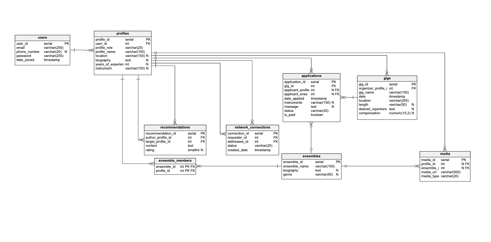

How might we make it easier and more trustworthy for musicians to discover, secure, manage, and get paid for live performance opportunities?
Finding live performance work can be difficult for freelance musicians. Unlike industries with centralized job boards, musicians find opportunities through a variety of networks: word of mouth, professors, orchestra directors, email lists, friends. Because hiring musicians can be incredibly relationship-driven, talented musicians who are new to a city or don't know the right people struggle to find consistent work. Even after landing a gig, communication, contracts, scheduling, and payment can be confusing for everyone involved.
I examined the hiring workflow from both sides of the marketplace.
This revealed that the challenge wasn't simply job discovery — it was building trust between both sides.
Most gig platforms function as job boards, but music hiring is different — organizers often choose performers because they've worked together before, a colleague recommended them, or a professor vouched for them. Rather than replacing professional networking, I designed a platform that embraces it: Opus, a trusted marketplace combining networking, professional portfolios, and gig management in one place.
Headshot, instruments, experience, genres, recordings, availability, rates, and reviews — helping organizers evaluate beyond a résumé.
String quartets, jazz trios, bands, and chamber groups can be booked as a complete unit instead of contacting each musician separately.
Detailed postings — date, budget, instruments, dress code, repertoire — filterable by location, instrument, genre, and compensation.
Organizers see mutual connections, shared ensembles, and past collaborations — rewarding real professional relationships.
Built-in chat with hire confirmation, creating a reliable record without conversations scattered across apps.
Organizers mark musicians as paid post-performance, giving both sides visibility into outstanding compensation.
I modeled the relationships connecting users, profiles, ensembles, gigs, applications, recommendations, and professional networks, then translated that model into a relational database — Users, Profiles, Network Connections, Ensembles, Ensemble Members, Gigs, Applications, Media, and Recommendations — to validate that every feature could be supported by a scalable backend.

A working mockup of the Opus mobile experience — browse the gig board, view a musician's profile, and see how ensemble booking and trust signals show up in the interface. Scroll and tap within the frame below, or open it full-screen.
Open prototype in a new tab →This project deepened my understanding of designing marketplace products that serve two distinct user groups with different goals, and gave me hands-on experience translating product requirements into information architecture and relational database models. Next steps I'd explore: built-in payment processing, verified references, calendar sync, contract generation, AI-powered recommendations, and reputation scoring.